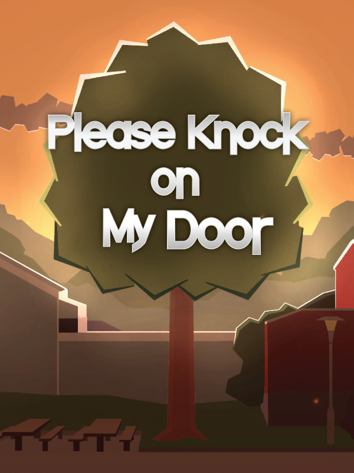

Please Knock on My Door
Please Knock on My Door
Details
|  | |
| Playtime | 5h 37m 0s |
| Last Activity | Never |
| Added | 12/30/2023 6:40:47 |
| Modified | 12/31/2023 8:28:32 |
| Completion Status | Played |
| Library | Steam |
| Source | Steam |
| Platform | PC (Windows) |
| Release Date | 9/7/2017 |
| Community Score | 70 |
| Critic Score | |
| User Score | |
| Genre | Indie |
| Developer | |
| Publisher | |
| Feature | Single Player |
| Links | Official Steam Twitch |
| Tag | |
Description
Please Knock on My Door is a story-driven game which gives you control over a person suffering from depression and social anxiety. Help them get through work and reach out to friends while desperately trying to survive. Experience the frailty these themes bring and gain a better understanding of what it's like to live with some of the most common mental health issues today.

- A compelling and emotional story offering a voice to those who have none.
- A fully voiced narrator who always has your best in mind. Probably.
- A gameplay system which adds to the weight of every story-choice you make.
- No "Game Over" screen, only alternate endings that tie into your choices.
- A soundtrack that has been tailor-made for this experience.
- Relationships that can be developed or broken.
- Game length varies depending on your choices, ranging from 1-3 hours with enough content that you can come back and explore different parts of the narrative in consequent playthroughs.
- As in real life, all of your choices are immediately saved. There is only one save.

Please Knock on My Door has been in development since autumn 2014 and was initially supposed to be a 6 month exploration of my own experiences with depression. A word of caution; this is a game that might be difficult to play for those who have dealt with psychological issues such as depression and anxiety. That said, I truly believe that through entertainment we are able to understand topics that would otherwise be too foreign for us. I hope this game can help you better understand what it can be like to live with these issues, like it has already helped me.